STATE := TRUE;
Step 4 - Create Your Own Function Block Types
This page is part of a guide that gives a walk-through of the major 4diac IDE features.
-
Create Your own Function Block Types (YOU ARE HERE!)
In this tutorial, you will learn how to create your own Function Block (FB). There are several different types of Function Blocks, we will show how to create a Basic, a Simple, a Composite and a Service Interface Function Block. The new FBs are then available in the FB Palette for use in the Applications of the System.
New FBs need to be created when the desired functionality doesn’t exist as a library FB or multiple FBs should be combined into just one FB. First, you have to define the interface with its input and output events and data. Afterwards, define the FB internals, which are defined by the kind of FB.
We implement the Blinking functionality inside all three different FB types to introduce their creation process. All four types do the same thing in different ways. At an event input, the Boolean data output will be toggled and the event output will message that the value has changed.
Create a new Function Block by selecting: File → New → New Type
Create a Basic Function Block
Follow the instructions in the creation wizard. For this tutorial, select BlinkTest as the parent folder. Choose a name for the new FB, we name it BasicTest. Afterwards, select the type of FB you want to create, in this case we choose TemplateBasic. The Function Block Type Editor (FBT Editor) opens after clicking Finish.
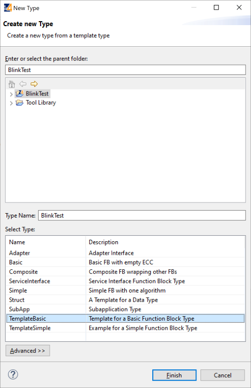
-
Your newly created type appears in the Type Library of your System BlinkTest.
-
The central editing area shows the FB part you are currently working on. Initially, it shows the interface of the Function Block.
-
The Palette shows all elements you can add to the FB interface.
-
The tabs below the central editing area identify the current part of the Function Block you’re editing. The picture shows the selected Interface tab.
-
The properties below show the information about the Function Block.
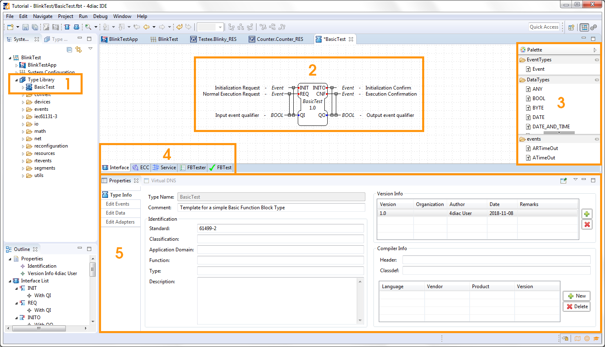
Change the Interface
The TemplateBasic FB already has some inputs and outputs which are commonly used. If you need another, just drag and drop it from the Palette into the FB or right-click at the FB to set another input or output. Of course you can also delete them by pressing the Delete key or right-click → Delete.
In this example, we are doing a Blinking Function Block. This should have then one input event that triggers the change, one output event as an indicator of a change, and a Boolean data output for the state. By default, the Boolean output is set to false and remembers the state until a new event comes in and converts the Boolean to true until the next input arrives. Right now, the TemplateBasic FB has more inputs and outputs than we need.
-
Select the INIT event, and delete it. Do the same for QI and INITO.
-
Select the QO output, and change its name to STATE by either double-clicking on it, or in the Properties below. You can change the comment for each event and data also in the Properties.
-
Check that the Type of STATE is BOOL in Properties.
-
Check the lines between events and data which represent the WITH. They indicate which data outputs are refreshed when an Event occurs. Similarly work event and data inputs, but in this case there’s no data input to refresh. Since the STATE is changed when CNF is triggered, there’s a WITH line between them.
-
Try and add Events and different types of Data input and outputs to the interface to play around from the Palette. Finally, leave it again as in the image.
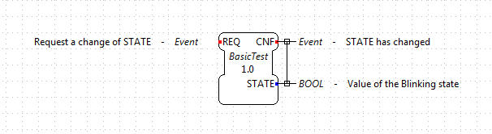
Change the ECC
Select the ECC (Execution Control Chart) tab at the bottom of the central editing area, and you will see a state machine graph.
This is the default one, and here’s where you actually code the behavior of the Function Block.
Purple boxes are states (the initial one is double-framed), the yellow ones represent the Algorithms that are executed when the Function Block enters the state, and the green ones are the triggered events after the algorithm.
The arrows between them represent Events that arrive at the Function Block.
Conditions are assigned to these arrows.
A 1 means that it will always change state after the algorithm. Events are consumed only one at a time.
The small numbers at the beginning of the transition are the priorities, in case more than one transition is possible.
Don’t try to understand everything at once. With a little practice, the terms and concepts become clearer.
-
Select and delete everything (Click and Drag) but the START state.
-
Add a State from the Palette on the right by Drag and Drop from the Palette. Change its name to On by either double-clicking on it, or selecting and then editing the Properties below.
-
Add another State and name it Off.
-
Add an Action to the state On via Drag and Drop from the Palette or right click → Add Action.
-
Select nothing by clicking in the background of the central editing area, then select the Algorithms tab in Property view. Here you see all the default algorithms of the Function Block. Delete them all by selecting and clicking the red cross, since we don’t use them in this example.
-
Add one algorithm by clicking on the green plus. Select the name and change it to turnOn.
Depending on the selected algorithm type, different algorithm editors are provided. Currently, the most used algorithm language is IEC 61131-3 Structured Text (ST). The ST Editor provides syntax highlighting and code completion. We’ll see later that this code is converted to 4diac FORTE code. If you select AnyText, no conversion is done, so you should know the syntax for 4diac FORTE (or other runtime environment).
On the right side, you can write your code. As the name implies, in the turnOn algorithm we set your STATE variable to TRUE. Using the name of the Data Output (or input or internal variable), you access its value for reading and writing.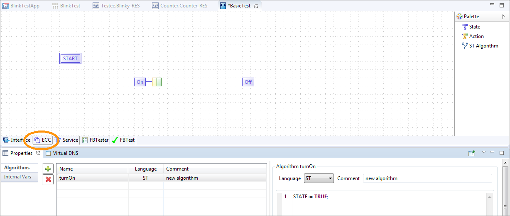
-
Double-click on the yellow box of the action of the On state and select the turnOn algorithm. Alternatively, you can also select this in the Property view.
-
Double-click on the green box of the action of the On state and select the CNF output event. Alternatively, you can also select this in the Property view.
-
Add another algorithm by clicking on the green plus. Select the name and change it to turnOff. As the name implies, in the turnOff algorithm we set your STATE variable to FALSE.
STATE := FALSE;
-
Double-click on the yellow box of the action of the Off state and select the turnOff algorithm.
-
Double-click on the green box of the action of the Off state and select the CNF output event.
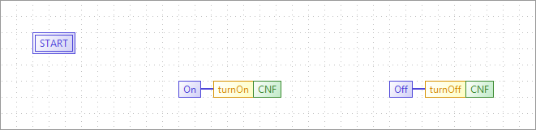
-
Draw a transition via Drag and Drop from the START to the state On. Select it, and in the transition tab of the Properties view select the condition REQ. Next to it, you have the possibility to add a condition (for example, if
STATE == TRUEor similar). In this example, no condition except the REQ event is needed. -
Draw a transition by Drag and Drop from the state On to the state Off. Select it, and in the transition tab of the Properties view select the condition REQ.
-
Draw a transition by Drag and Drop from the state Off to the state On. Select it, and in the transition tab of the Properties view select the condition REQ.
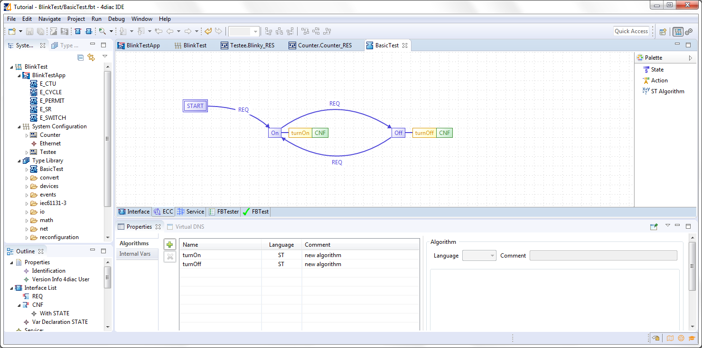
At the beginning, the FB is in the START state. When a REQ event arrives, it jumps to the On state, executes algorithm turnOn and triggers the CNF output event. When the next event arrives, it jumps to Off state, executes algorithm turnOff and triggers the CNF output event. That’s how the ECC works.
In case the transition with a "1" had also a REQ event, an infinite loop won’t happen since the event is consumed only once. You would need to REQ events to go back.
Create a Simple Function Block
The Simple FB has only one algorithm and no ECC.
Create a new Type by following the instructions in the creation wizard. For this tutorial, select BlinkTest as the parent folder. Choose a name for the new FB, we name it SimpleTest. Afterwards, select the type of FB you want to create, in this case we choose Simple. The Function Block Type Editor (FBT Editor) is opening after clicking Finish.
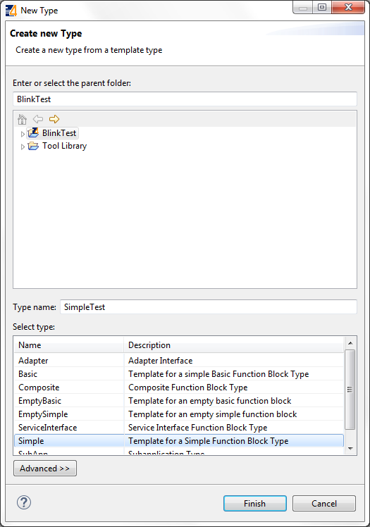
-
Change the interface as before.
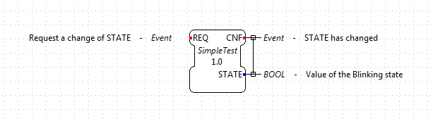
-
Select the Algorithm tab at the bottom of the central editing area. In this view, you can define an algorithm of the Simple FB.
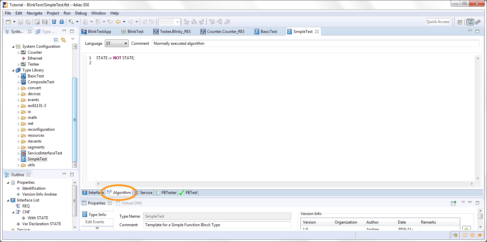
That’s all you need to do for the Simple Function Block.
Create a Composite Function Block
Create a new Type following the instructions in the creation wizard. For this tutorial, select BlinkTest as the parent folder. Choose a name for the new FB, we name it CompositeTest. Afterwards, select the type of FB you want to create, in this case we choose Composite. The Function Block Type Editor (FBT Editor) is opening after clicking Finish.
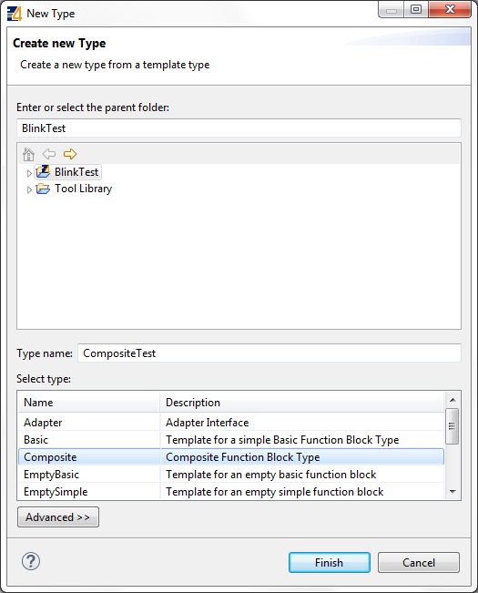
-
Change the interface as before.
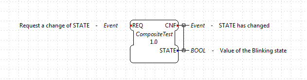
-
Select the Composite Network tab at the bottom of the central editing area. In this view, you can create your own network of FBs inside the Function Block. For this example, use the E_SWITCH and E_SR and connect them as in the original Blink example.
-
On the edges of the central editing area, you can see events and data that correspond to the interface of the Composite. Connect them as in the image below.
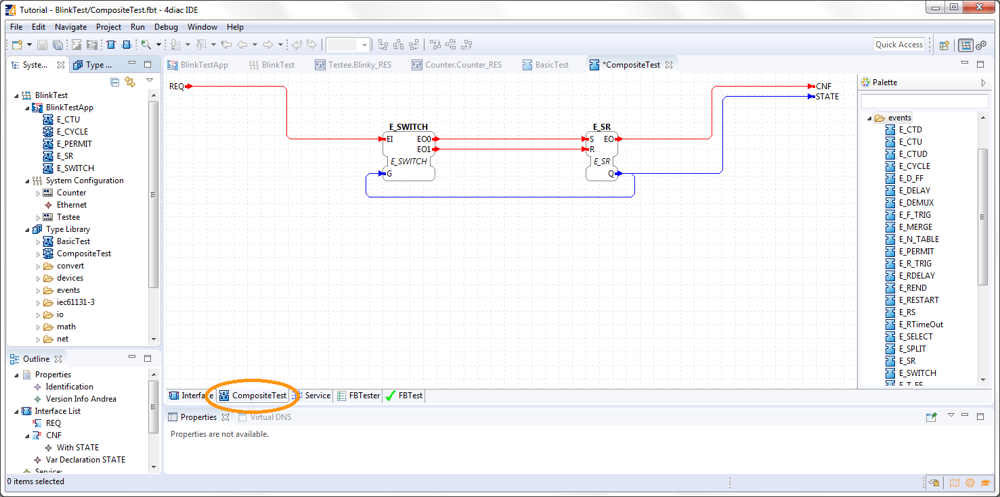
That’s all you need to do for the Composite Function Block.
Create a Service Interface Function Block
Create a new Type by following the instructions in the creation wizard. For this tutorial, select BlinkTest as the parent folder. Choose a name for the new FB, we name it ServiceInterfaceTest. Select then the type of FB you want to create, in this case we choose Service Interface. The Function Block Type Editor (FBT Editor) opens after clicking Finish.
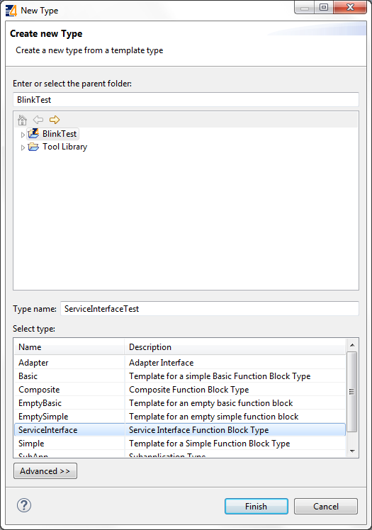
Change the interface as before.
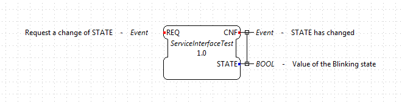
That’s it. The behavior of the Service Interface Function Block must be implemented directly in the code that’s generated from it. You will need to implement the functionality for each incoming event, manage the internal variables and send output events by yourself after exporting. Below, you find the code for this example.
Export Function Block Types
4diac IDE provides an export filter to generate C++ code which can be included in the 4diac FORTE development process. In order to export a Function Block Type, either
-
select File → Export → 4diac IDE → 4diac IDE Type Export → Next
-
right-click on the Function Block to export and select Export → 4diac IDE → 4diac Type Export
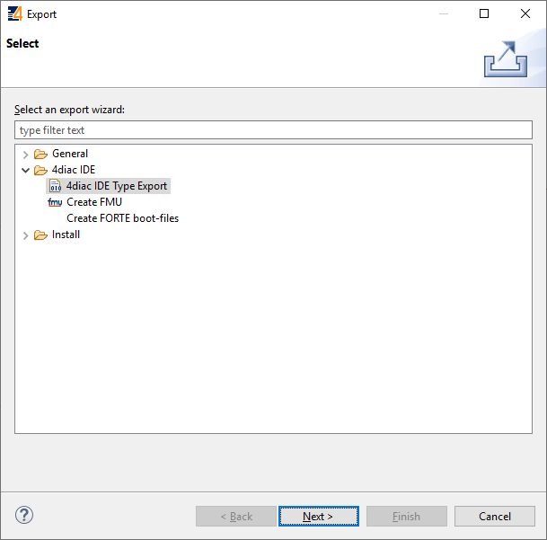
Select the FBs to be exported on the right side of the wizard.
It makes sense to use your own folder, we choose ext_modules/EXAMPLE_TEST.
Before exporting one or more Function Block Types, the Export Destination and the Exporter (FORTE 1.x NG) have to be chosen.
We’ll export the four Function Block Types we just created.
You can select the option Export CMakeLists.txt to create a configuration file for the forte-build-process. This will use the name of the folder to which the files were exported as the module name and include all .c, .cpp and .h files in that folder. If you need more control, you can manually create the configuration file.
|
Caution
|
Make sure that not all FBs are checked, otherwise all existing FBs will be exported! |
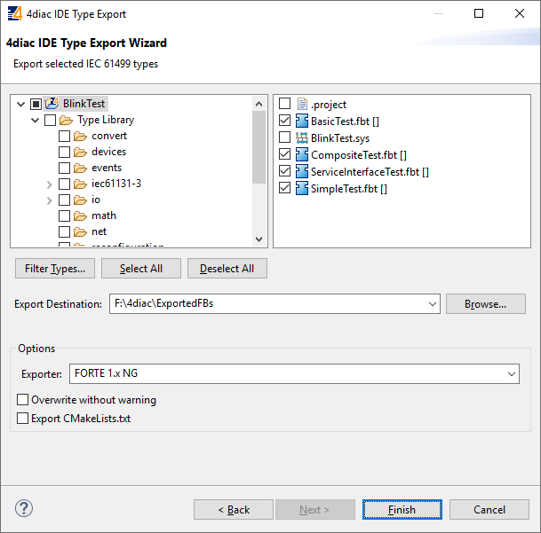
After clicking the button Finish and no warning pop up everything went fine. Your exported FBs are in the folder you chose before. If a dialog window pops up, something went wrong and it will inform you that the export to the 4diac FORTE C++ format was not successful.
If the output directory already contains an older version of the exported Function Block Type, it is possible to overwrite the old file or to open a Merge Editor, where manual merges can be performed.
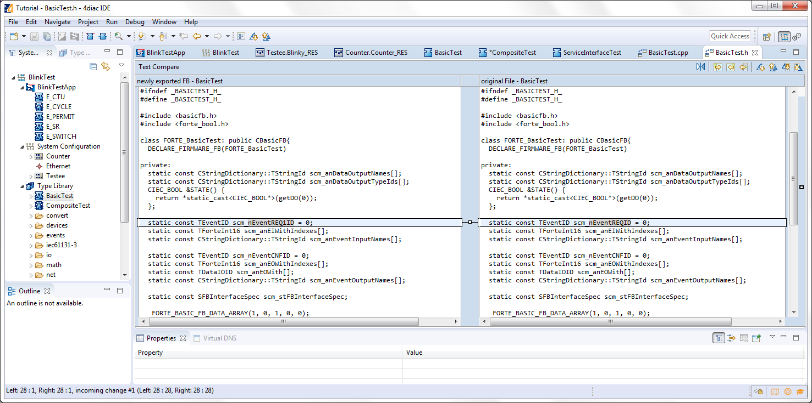
Finish the Service Interface Test
Now that you have exported the Service Interface Function Block, you need to edit it in order to get the desired behavior.
Open the ServiceInterfaceTest.cpp file that was recently exported, and take a look at the executeEvent function at the bottom.
void FORTE_ServiceInterfaceTest::executeEvent(TEventID paEIID, CEventChainExecutionThread *const paECET) {
switch(paEIID) {
case scm_nEventREQID:
#error add code for REQ event! /* do not forget to send output event, calling e.g. sendOutputEvent(scm_nEventCNFID, paECET); */
break;
}
}
The comment reminds us to set an output event, replace #error add code for REQ event! with st_STATE() = !st_STATE(); for the toggling effect.
void FORTE_ServiceInterfaceTest::executeEvent(TEventID paEIID, CEventChainExecutionThread *const paECET){
switch(paEIID){
case scm_nEventREQID:
st_STATE() = !st_STATE();
sendOutputEvent(scm_nEventCNFID, paECET);
break;
}
}
To get or set an internal variable or data input in the 4diac FORTE template, you use the name and the parentheses. The sendOutputEvent is the specific function to send output events.
Other Type Editors
Currently, only the management (i.e. creation, deletion and modification) of the Basic, Simple, Composite, Service Interface and Sub Application (SubApp) Function Block types as well as Adapter types are supported. The management of Device and Resource types is currently not supported.
Where to go from here?
-
In the next step you will see other basic features:
Step 5 - Other Basic Features -
If you want to go back to the distributed application running remotely, here’s a link
Step 3 - Deploy Applications Remotely -
If you want to go back to the Start Here page, we leave you here a fast access
Where to Start